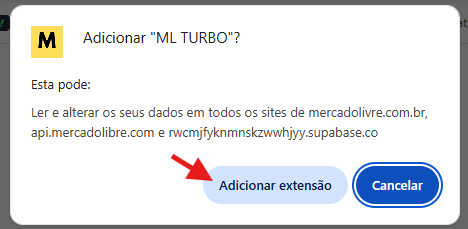
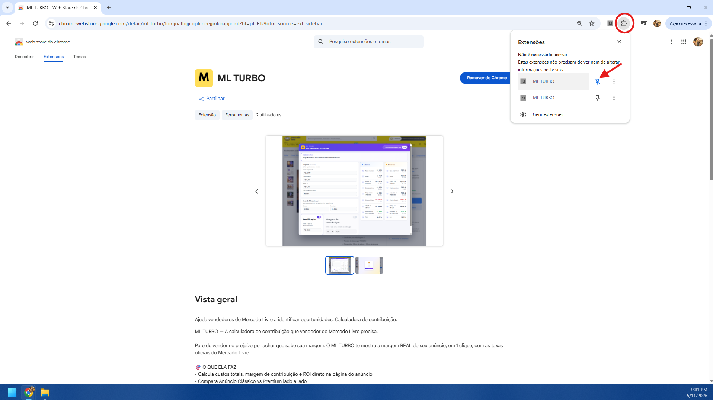
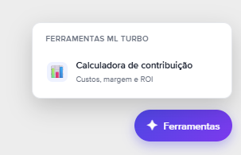
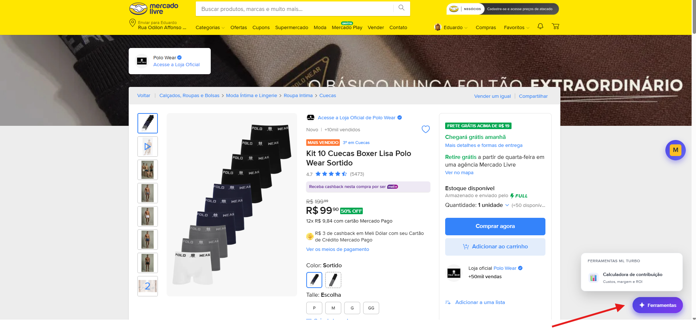
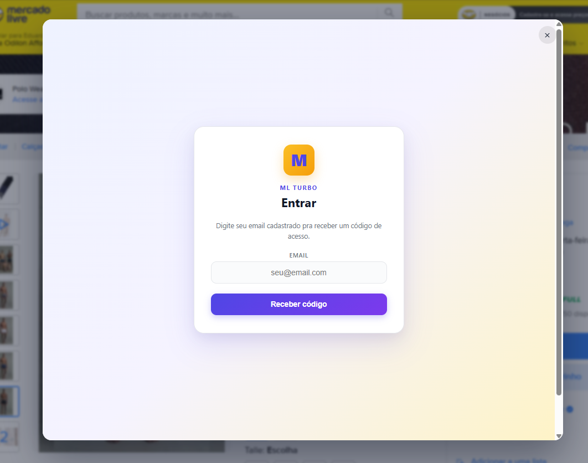
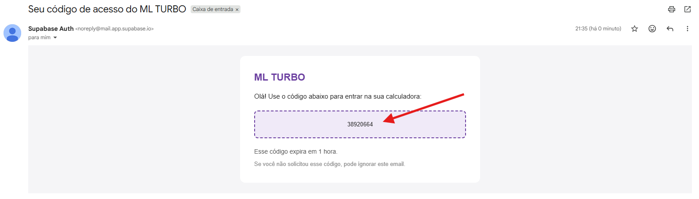
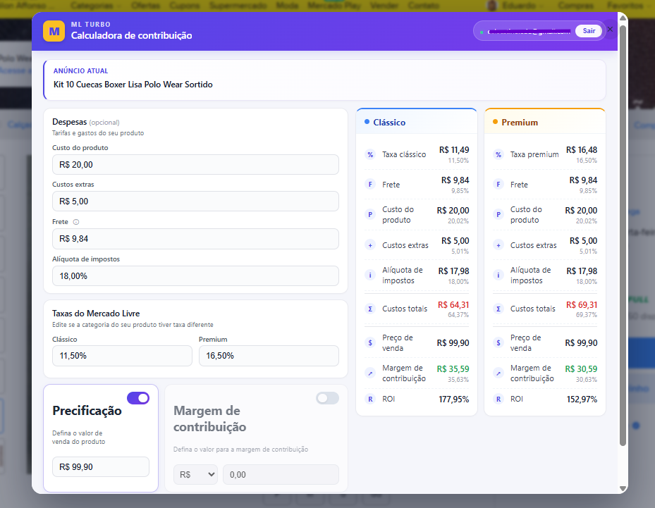
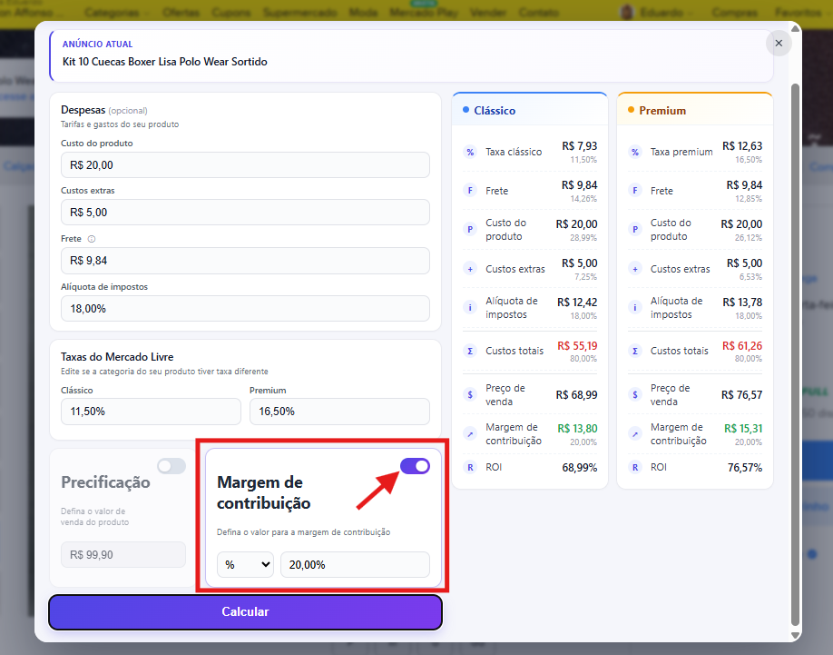
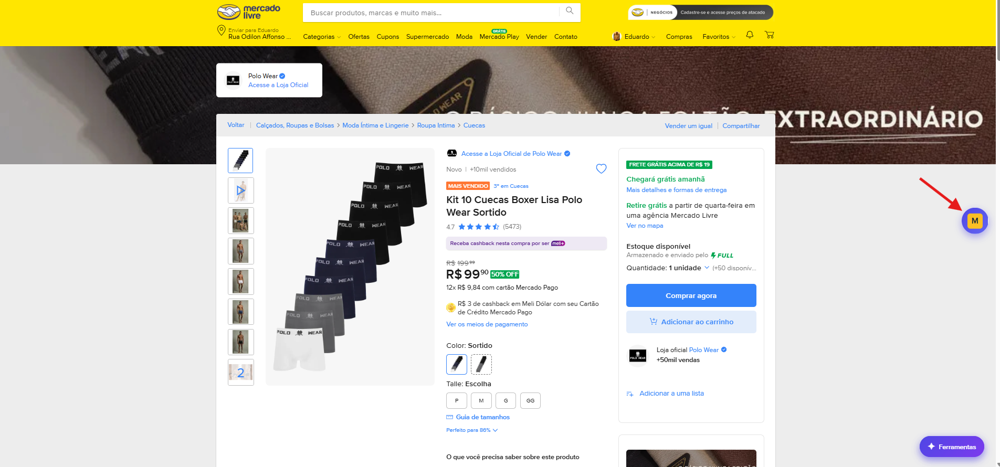
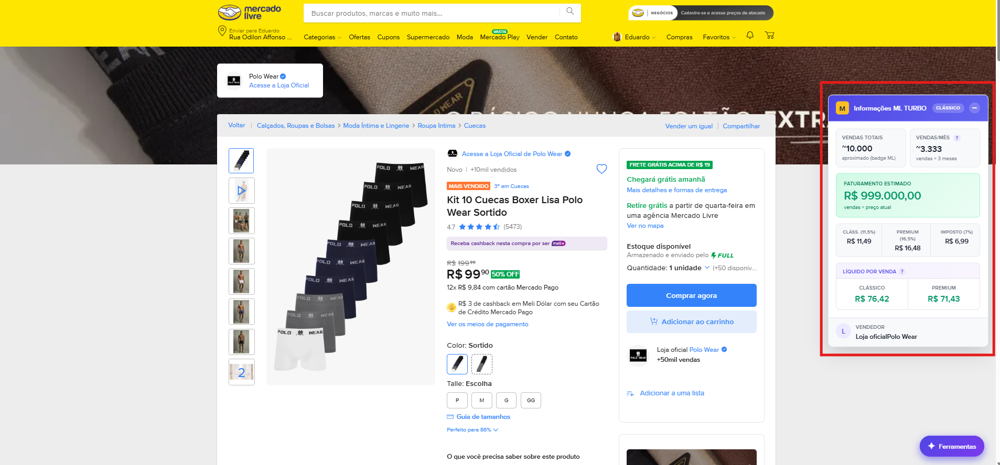

Abra a página oficial do ML TURBO na Chrome Web Store clicando no botão abaixo.
Em seguida, clique em "Usar no Chrome" (ou
"Adicionar ao Chrome") e confirme em "Adicionar extensão"
no aviso que aparece em cima.
Print 1 — Página do ML TURBO na Chrome Web Store, com o botão "Usar no Chrome".

Print 2 — Aviso do Chrome pedindo confirmação. Clique em "Adicionar extensão".
Se o botão não abrir, copie e cole no navegador:
https://chromewebstore.google.com/detail/ml-turbo/lnmjnafhijjibjpfceeejjmkoapjiemf
2
Fixe o ícone do ML TURBO na barra
No canto superior direito do Chrome, clique no ícone de quebra-cabeça
(extensões). Na lista que abre, encontre ML TURBO e clique no
alfinete ao lado. O "M" amarelo fica fixo na barra do navegador,
do lado da barra de endereço.

Print 3 — Menu de extensões do Chrome. Clique no alfinete ao lado do ML TURBO para fixar.
Fixar é opcional. Mesmo sem fixar, a extensão funciona — você acessa pelo botão
flutuante "Ferramentas" que aparece dentro do Mercado Livre (próximo passo).
3
Encontre o botão "Ferramentas" no Mercado Livre
Com a extensão instalada, abra qualquer página do Mercado Livre
(mercadolivre.com.br) — pode ser a home, uma busca ou um anúncio.
No canto inferior direito da página aparece um botão roxo escrito
"Ferramentas". É a partir daí que você acessa tudo o que o ML TURBO
oferece.

O botão "Ferramentas" fica sempre flutuando no canto inferior direito da página do ML.
Não está vendo o botão? Confirme que você está em mercadolivre.com.br
(não em outro país) e que o ícone "M" da extensão na barra do
navegador está colorido — se estiver cinza, o ML TURBO está
desativado pra aquela aba.
4
Abra o menu e escolha "Calculadora"
Clique no botão "Ferramentas". Um menu se abre listando as
ferramentas disponíveis. Hoje, a opção principal é a "Calculadora" —
é ela que vai te mostrar a margem real do seu anúncio. Clique em
"Calculadora" para abrir o painel.

Menu aberto. Clique em "Calculadora" para abrir o painel da calculadora.
Novas ferramentas serão adicionadas a esse mesmo menu ao longo do tempo. Sempre que
houver uma novidade, ela aparece aqui — sem precisar reinstalar nada.
5
Faça login com seu email cadastrado
Na primeira vez que abrir a calculadora, vai aparecer uma tela de login.
O acesso é por email + código de 6 dígitos (sem senha pra decorar
ou esquecer). O passo a passo é:
5.1 — Digite o email cadastrado
Use exatamente o mesmo email que apareceu no Mercado Pago quando
você pagou a assinatura — é nele que liberamos seu acesso. Em seguida, clique em
"Enviar código".

Tela de login: digite seu email cadastrado e clique em "Enviar código".
5.2 — Pegue o código no seu email
Em poucos segundos chega um email com um código de 6 dígitos.
Se não aparecer na caixa de entrada, dê uma olhada no spam e em
promoções — o remetente é o sistema de autenticação (parece com
noreply@…).

Exemplo do email com o código de acesso. Copie os 6 dígitos exatamente como aparecem.
5.3 — Cole o código e entre
Volte para a tela do ML TURBO, cole o código no campo indicado e clique em
"Entrar". Sua sessão fica salva no navegador — só vai precisar
logar de novo se trocar de computador ou limpar os dados do Chrome.
Tela do código: cole os 6 dígitos recebidos e clique em "Entrar".
O código expira em alguns minutos. Se demorar pra colar, peça um novo clicando em
"Reenviar código" — sempre use o código mais recente.
6
Modo "Precificação" — descubra quanto sobra
Depois de logar, abra qualquer anúncio do Mercado Livre e clique em
"Ferramentas" → "Calculadora". Vários campos já entram preenchidos
automaticamente (título, preço, frete, categoria e taxas reais do ML).
No modo "Precificação" (selecionado por padrão), você informa o
preço de venda e a calculadora mostra quanto sobra
depois de descontar taxa do ML, custo fixo, frete, imposto e custo do produto.
O resultado aparece lado a lado, comparando
Anúncio Clássico vs. Premium — assim você vê na hora qual tipo
de anúncio é mais lucrativo pra aquele produto.

Modo "Precificação": defina o preço de venda e veja a margem real, o ROI e os custos detalhados em Clássico e Premium.
Todos os campos pré-preenchidos são editáveis. Se o frete que
apareceu é o que o comprador paga (e não o que você paga, como acontece
em Envio Full), basta ajustar o valor no campo correspondente.
7
Modo "Margem desejada" — defina o preço pela margem
Esse é o modo que vira a conta de cabeça pra baixo. Em vez de você
dizer o preço e descobrir a margem, você diz quanto quer ganhar e
a calculadora devolve qual deve ser o preço de venda pra atingir
essa margem, já considerando todos os custos (taxa do ML, custo fixo, frete,
imposto e custo do produto).
Você pode informar a margem de duas formas:
Em porcentagem (%) — por exemplo: "quero 25% de margem sobre o
preço de venda". Útil quando você trabalha com uma meta percentual.
Em reais (R$) — por exemplo: "quero ganhar R$ 30,00 limpos
em cada venda". Útil quando você raciocina em valor absoluto por unidade.
É só alternar o seletor de % ou R$ ao lado do
campo. O resultado já aparece comparando Anúncio Clássico vs. Premium, então você
descobre o preço de venda ideal pra cada formato.

Modo "Margem desejada": informe a margem em % ou em R$ e a calculadora devolve o preço de venda necessário em cada formato de anúncio.
8
Card flutuante de informações do anúncio
Quando você abre uma página de anúncio, o ML TURBO mostra um
pequeno indicador flutuante na lateral direita: o
botão "M" amarelo. Ele dá um acesso rápido às informações do anúncio
(categoria, frete detectado, taxas por listing) sem precisar abrir a calculadora.
Botão minimizado
Por padrão, o botão fica recolhido na lateral pra não atrapalhar
a navegação. Mesmo que o Mercado Livre re-renderize a página, ele continua visível —
ancorado direto na tela.

Botão de informações minimizado: círculo amarelo com o "M" na lateral direita da página.
Botão expandido
Clique no botão "M" pra expandir o card. Ele mostra os dados-chave
que o ML TURBO leu da página: categoria, frete detectado, taxa de Anúncio Clássico
e Premium, custo fixo do ML (quando aplicável), entre outros. Pra fechar de novo,
basta clicar no − no canto do card e ele volta a ser um círculo
discreto.

Card expandido: confira de relance categoria, frete, taxas e demais dados detectados do anúncio.
?
Problemas comuns
"Não estou vendo o botão Ferramentas"
Confirme que você está em mercadolivre.com.br (não em outro país).
Veja se o ícone "M" da extensão na barra está colorido, e não cinza.
Atualize a página (F5) — o botão é injetado quando a página termina de carregar.
"Recebi 'email não autorizado' no login"
Significa que aquele email ainda não foi liberado no nosso sistema. Costuma acontecer
por um destes motivos:
O pagamento ainda está sendo confirmado pelo Mercado Pago — leva alguns segundos.
Aguarde 1 minuto e tente de novo.
Você está digitando um email diferente do que aparece na sua conta do Mercado Pago.
O acesso é sempre liberado pro email que efetivamente pagou. Tente com o email do MP.
Continuou? Mande um email pra
contato@mlturbo.com com o comprovante e
a gente libera no manual.
"O código não chegou no email"
Confira a pasta de spam e promoções.
O remetente é o sistema do Supabase (parece com noreply@…).
Clique em "Reenviar código" na tela de login.
"O frete que apareceu não bate com o meu custo"
Normal. A extensão lê o frete que o comprador está vendo. Pra
Envio Full, o ML cobra do vendedor uma tarifa diferente, calculada
por peso/dimensão. O campo é editável: ajuste pro valor real que o ML te cobra.
Ainda com dúvida?
Mande um email pra contato@mlturbo.com
contando o que aconteceu — se possível, com um print da tela. Geralmente respondemos
no mesmo dia útil.